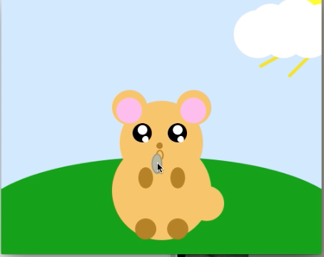

Processing Assignments
A majority of my work throughout this course, has been done using Processing 3. Here you can my very first assignemnt, and my other work that I have done.


Processing Projects
While still using Processing 3, these projects were much more in depth and required a lot more attention! So the hamster project featured background music and a sound that played when the hamster was clicked! And the Missouri Farmers Market, was my data visualization project. I pulled data from a huuge spreadsheet and transferred it to this semi-interactive map!

HTML work
Besides the website you're looking at now, I have also made a website for my theoretical app called SafeLine. Check out that website here!